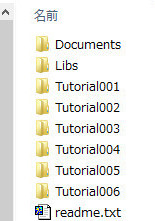

ゲーム作成の準備
コンパイラと入力インターフェイス
DxBase2015は
VisuakStdio2013のみでゲーム作成を行えます。作成したゲームは、
Windows8.1以上で動作します。
もしお持ちでない方は
Micrsoft社のサイトから、
Visual Studio Community 2013 を取得してください。（Community以外でもProfessional、Premiumで動作確認が取れてます。）
チュートリアルやサンプルでは、ほとんどが
XBox360コントローラでの操作になっています。キーボード及びマウス入力を得るには、
キーボード及びマウス入力のサンプルをご確認ください。
ダウンロードと解凍
DxBase2015は
GitHubに公開されています。
アドレスは
https://github.com/WiZFramework/DxBase2015
です。
上記サイトにアクセスすると、
DownloadZIPというボタンがありますので、そこで最新版をダウンロードしてください。解凍すると以下のようなディレクトリ構成になります。

図setup_a
Documentディレクトリには、このページを含めたドキュメントが入ってます。index.htmlをブラウザで開いてください。
Libsディレクトリには、フレームワーク本体や、
DirectXTKライブラリなどが入ってます。このあと、Autodesk社の
FBX SDK（FBX Software Development Kit）のヘッダとライブラリとコピーしていただきます。（FBXSDKのセットアップで解説します）
Tutorial001など、
Tutorialではじまるディレクトリには、チュートリアルサンプルが入ってます。チュートリアルの解説には、このドキュメントにあります。
Sample001などのディレクトリにはサンプルが入ってます、内容は、ドキュメントのindex.htmlを見てください。チュートリアル以外のサンプルには解説はありませんが、できるだけコメントを記述してますので、参考にしてください。
FBXSDKのセットアップ
GitHubからのダウンロードには、
FBXモデルの読み込みのためのライブラリが含まれてません。以下の手順でセットアップしたのち、必要なファイルを、
DxBase2015内に配置して利用します。
- Autodesk社のFBX SDK（FBX Software Development Kit）をセットアップします。
- FBX SDKは検索エンジンなどで FBX SDK などで検索するとたどり着けます。そこからダウンロードのページに移り、アーカイブの中のWindowsという項目のFBX SDK 2015.1 VS2013 をダウンロードしてセットアップしてください。
なお、最新版、FBX SDK 2016 VS2013については動作確認中です。
- FBX SDKは実行ファイルになっていますので、そのままセットアップ可能です。
- FBX SDKのセットアップが済んだら、セットアップされたディレクトリ
（デフォルトで「C:\Program Files\Autodesk\FBX\FBX SDK\2015.1」にエクスプローラで移動してください。
- FBX SDKがセットアップされたディレクトリの「include」ディレクトリ内の、fbxsdk.hというファイルと、fbxsdkディレクトリを、そのまま、DxBase2015を解答したディレクトリの「Libs\include」内にコピーしてください。
- FBX SDKがセットアップされたディレクトリの「lib\vs2013\x86\debug」ディレクトリ内の、libfbxsdk-mt.libというファイルと、libfbxsdk.pdbを、DxBase2015を解答したディレクトリの「Libs\lib\Debug」内にコピーしてください。
- FBX SDKがセットアップされたディレクトリの「lib\vs2013\x86\release」ディレクトリ内の、libfbxsdk-mt.libというファイルを、DxBase2015を解答したディレクトリの「Libs\lib\Release」内にコピーしてください。
以上で、セットアップは完了です。お疲れ様でした。